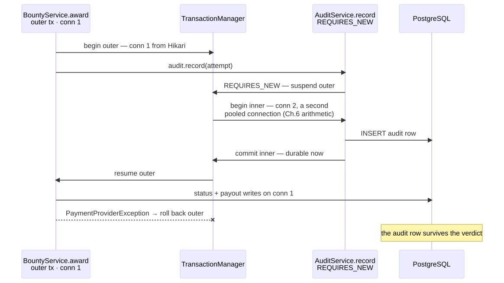

Chapter 8 — The Silent Commit
The spreadsheet had three columns and one impossible row.
Late May, a conference room with the blinds half down, and the controller from finance turning her laptop around with the careful neutrality of someone presenting evidence. Report #5817: an authentication bypass in a customer program, validated, severity Critical, bounty five thousand dollars. The Atrium database said the report was Awarded. The payouts table held a payout row, timestamped, complete. The audit log said AWARD reportId=5817 amount=5000.00 status=OK. The payment provider's portal, fourth column, hand-typed: no such transfer.
"The database says we paid," the controller said, "the bank says we didn't, and the log says handled."
Lena had her arms folded. "The researcher has been politely asking about their bounty for nine days. Researchers talk to each other, Maya. On day ten, politeness becomes a screenshot."
Maya was already scrolling the audit log, a cold familiarity settling in. While chasing the thousand queries earlier that month she'd noticed triage writes committing in odd little bursts, transactions ending in places she couldn't predict. She'd written triage commit boundaries? on a sticky note, stuck it to the brick, and buried the question under the N+1 work. The sticky note had just invoiced her for five thousand dollars.
"I've seen the edge of this," she said. "Give me the morning."
From the doorway — he had apparently been standing there a while — Elias said, "A caught exception is a decision. Most people make it by accident." He left before anyone could ask him to elaborate: his way, Maya had learned, of assigning homework.
The investigation
The award path lived in BountyService.award(), and the method looked respectable — annotated, tidy, reviewed. The rot was one call down, in a helper that git blame dated to 2021 with the commit message temporary: don't let provider blips fail awards.
@Service
public class BountyService {
@Transactional
public void award(long reportId, BigDecimal amount) {
Report report = reports.findById(reportId).orElseThrow();
report.setStatus(ReportStatus.AWARDED); // write 1: dirty-checked
payouts.save(new Payout(report, amount)); // write 2
auditLog.record("AWARD", reportId, amount, "OK"); // write 3: same transaction
paymentGateway.transferSafely(report.getResearcherId(), amount);
}
}
// PaymentGatewayHelper.java — "temporary", 2021
void transferSafely(UUID researcherId, BigDecimal amount) {
try {
client.initiateTransfer(researcherId, amount); // throws PaymentProviderException (checked)
} catch (PaymentProviderException e) {
log.warn("transfer failed — handled, will reconcile later", e);
}
}
⏸ Your call. Annotated, tidy, reviewed — and the bank is empty. Where exactly does the rollback signal die, and which -ility has already failed by the time the proxy decides?
She reconstructed the night of the award. The provider had a four-minute API outage. initiateTransfer threw its checked PaymentProviderException; the helper caught it, logged the word handled, and returned normally. Control passed back up to award(), which also completed normally. The proxy saw a normal return and committed. Status durable. Payout row durable. Audit row confirming success, durable. The only thing that hadn't happened was the money.
Her raw-JDBC instinct said the transaction should have noticed — at Meridian she'd written the rollback herself, a conn.rollback() in the very catch that saw the failure. The instinct was the trap. Spring's transaction isn't ambient awareness; it's a proxy that inspects how the method exits, watching for exactly one signal. And the signal had been eaten two stack frames down.
(If you committed at the pause: the signal dies in the 2021 catch — the proxy reads only what crosses the method boundary, and nothing exceptional ever did. The -ility is integrity. Its price list arrives at the Wall.)
It was February's proxy bug in a new form (annotations live on the container's wrapper; a this. call dispatches on the raw object behind it). February's self-invoked call never entered the proxy, so no transaction wrapped it at all; tonight's exception never exited through it. The rollback signal travels out through the same proxy, and a catch two frames down meant it never arrived. The persistence context from the thousand-queries week (the N+1 — one lazy load per row) had done its job correctly: dirty checking decided what to flush — snapshot-diff at commit. Nobody in seven years had decided whether it should commit.
She was still writing it up when Marisol appeared with the sprint's second gift. That morning, two triagers had been working the same hot report on Northbeam's program. Marisol had raised the severity to Critical with a justification note; a colleague, reading it at the same moment, had lowered it to Medium. Both saves succeeded. Both got green toasts. The severity was whatever the second click said, the first click's reasoning was gone, and a researcher whose bounty rode on that number had opened a dispute.
"No error," Marisol said. "It just… picked one of us. We'd like to know the rules of the game we're apparently playing against each other."
Two failures in one sprint, one truth underneath: nobody at Glasshouse had ever decided what a write boundary promised. Maya grepped the codebase and winced: @Transactional on controllers, on repository fragments, on helpers. Sprinkled like salt, by feel.
What the senior sees
At the Wall, Elias handed her the marker instead of taking it. "Walk me through what the annotation does. Not what it means. What it does."
She drew it under the smoke-cloud proxy from February, which still said this. goes around the mirror in her own handwriting — shorthand for a self-call landing on the raw object behind the annotated wrapper. "The call hits the CGLIB proxy. The transaction interceptor asks the PlatformTransactionManager to begin: a connection comes out of Hikari, a database transaction opens, and the connection and the EntityManager get bound to the current thread — TransactionSynchronizationManager, ThreadLocals. That's why every repository call inside the method lands in the same transaction without being told: they look up the thread's bindings."
"Name the propagation that makes that work."
"REQUIRED — the default. Join the caller's transaction if one exists, start one if not. It's why three repositories and a helper all wrote into one transaction without knowing it."
"And on the way out?"
"The interceptor looks at how the method ended. Normal return: commit. Exception: it consults the rollback rules — RuntimeException or Error, roll back; checked exception, commit anyway." She stopped, hearing it. "And a caught exception isn't an ending at all. The method returned normally. The proxy never knew."
"So where did your rollback die?"
"In a catch block in 2021. The proxy can only see what crosses the method boundary."
She wrote it on the Request Journey diagram, to the right of the service layer, where it has stayed ever since: commit/rollback happens on the way out.
"Why is the default unchecked-only?" she asked. "That's the part that feels like a trap."
"History, not law," Elias said. "EJB decided last century that checked exceptions were business conditions the caller would handle — order rejected, file missing — and unchecked ones were system failures. Spring inherited the convention. You may overrule it per method: rollbackFor = Exception.class. What you may not do is fail to choose."
Then he tapped the audit line in her drawing. "Now the harder question. Your audit log participates in the very transaction it's supposed to witness. Tonight it confirmed a lie. What does it do when a legitimate award fails and rolls back?"
Maya followed it through. "The audit row rolls back with it. We'd have no record the attempt ever happened. The witness dies with the defendant."
"So?"
"So the audit needs its own transaction. REQUIRES_NEW — the interceptor suspends the outer transaction, takes a second connection, runs the audit write, commits it independently, then resumes the outer. The audit survives whatever the business logic decides." She paused, because the four-beat skeleton on her index card demanded it. "Cost: every REQUIRES_NEW call holds two pool connections at once, so under load it can double our Hikari draw. And the inner transaction can deadlock against rows the outer one still holds."
She drew it before he could ask — two lifelines, the suspension explicit:

"And NESTED?"
"Savepoints inside one physical transaction — partial rollback without abandoning the whole. But savepoints are a JDBC affair; JPA has no savepoint API, so our JpaTransactionManager would refuse NESTED at runtime anyway. And we don't want a partial anything here — we want an independent witness." Elias nodded, and she understood she'd just passed something.
The lost update came last. Maya had arrived assuming it was an isolation problem; Postgres runs READ_COMMITTED by default, and surely some stricter level would have caught it. Elias just waited while she argued herself out of it. Marisol's read and Marisol's write were two different transactions, separated by forty seconds of human thinking across stateless HTTP requests. Isolation governs what concurrent transactions see of each other, and these two never overlapped; the bug lived between requests, where no transaction existed. Raising the level to SERIALIZABLE would add contention on the hot tables without touching it. No isolation level on earth spans think time.
"Say the diagnosis precisely," Elias said. "Most people reach for an isolation level here — the bug smells like the database's fault."
"It's not an isolation problem," Maya said slowly. "It's an application-level versioning problem. The two transactions never overlap, so isolation has nothing to referee — the version has to live in the data and travel with the request."
"That sentence is a tell. Recite the ladder anyway — you'll be asked." She did, marker up: READ_UNCOMMITTED allows dirty reads — data another transaction may yet roll back. READ_COMMITTED rules those out, but a re-read can differ — the non-repeatable read. REPEATABLE_READ pins rows already read; new rows can still appear — phantoms. SERIALIZABLE rules out all three. "And Postgres?" "Refuses to do dirty reads — ask for READ_UNCOMMITTED, you silently get READ_COMMITTED. Its REPEATABLE_READ is snapshot isolation, so no phantoms either. And SERIALIZABLE is serializable-snapshot — SSI — fast because it lets transactions run, then aborts any it can't order. Whatever asks for it must retry."
Elias drew one long horizontal line beneath her ladder and labeled the ends. "The architect's version of this chapter. Consistency is a spectrum, and somebody has to price it. This end: the invariant — status, payout, version — one transaction or it's corruption. That end: the eventual — the notification email; arguably the transfer itself, if we ever commit intent and reconcile. Between them, your audit: durable, not simultaneous. Integrity is tonight's -ility, and its currency is throughput — every guarantee you strengthen holds a lock longer, draws a second connection, or retries under load. Nobody upstairs priced it, so the defaults did — and defaults don't know which row is the money."
She copied the line into her notebook before the marker dried:
Consistency priced per write — every step rightward buys throughput and sells simultaneity.
"Version your data, or lock it and hold," Elias said. "Choose by contention and hold time. Now go let Marisol break it on purpose."
The reenactment
Staging, Thursday: Marisol on one laptop, a fellow triager on another, both with report #5817's staging twin open. Marisol had brought her own split keyboard — she swam open water before dawn and refused to lose a race, even a staged one, on laptop keys. Maya counted down from three; both clicked Save. Green toast, green toast, and the database quietly kept the second write and discarded the first — the lost update, reproduced in one take.
Then she deployed her branch and they did it again.
@Entity
public class Report {
@Id @GeneratedValue private Long id;
@Version
private long version; // UPDATE report SET severity=?, version=2
// WHERE id=? AND version=1 → 0 rows = someone got there first
// ...
}
@RestControllerAdvice
class ConcurrencyAdvice {
@ExceptionHandler(OptimisticLockingFailureException.class)
ProblemDetail conflict(OptimisticLockingFailureException e) {
var pd = ProblemDetail.forStatus(HttpStatus.CONFLICT);
pd.setTitle("Report changed while you were editing");
pd.setDetail("Another triager updated this report. Review their change, then re-apply yours.");
return pd;
}
}
This time the second save came back as a 409. The merge flow Maya had sketched with Lena showed the colleague what Marisol had changed and offered to re-apply his edit on top. Hibernate did the actual work with one WHERE clause: update the row only if the version you read is still on disk. Zero rows updated meant somebody got there first, and the exception said so out loud.
She had hand-rolled this handshake once at Meridian — a hot dispatch table, an UPDATE … WHERE id = ? AND version = ?, a check that executeUpdate() came back zero rows, a homemade exception to say someone got there first. @Version was the same column wearing a JPA annotation, the WHERE clause written for her, and for once the hand-wired instinct was a head start instead of a trap.
"Why not just lock the row?" the colleague asked. "Make my screen wait until hers commits?"
"Contention and hold time," Maya said. "Two triagers editing the same report in the same minute happens — what, weekly? Optimistic costs nothing until the rare collision, then costs one polite retry. Pessimistic — PESSIMISTIC_WRITE, a SELECT FOR UPDATE — means holding a real database lock across human think time. You go to lunch mid-edit and the row is hostage — and a pooled connection under it, the same Hikari math that took the site down at six percent CPU. We'll reserve pessimistic for short, machine-paced contention, like the payout ledger rollups. A machine writer doesn't get a 409 — it catches the optimistic failure, re-reads, and retries with a cap."
Idris, passing with coffee, did not slow down. "Great. Show me the lock-wait dashboard before you ship it."
There wasn't one. Maya filed the ticket next to April's still-open real application metrics ticket — opened when the site drowned at six percent CPU, pool exhausted — where the operational debt quietly continued to age.
The fix
The pull request was small. The ADR attached to it was not, and it was the part Elias read first.
ADR-008 — The consistency model. Context: A caught checked exception half-committed an award — database, bank, and audit log telling three different stories — and two triagers silently overwrote each other across forty seconds of think time. Decision: Service-boundary methods declare
rollbackFor = Exception.class(we opt out of the EJB inheritance); optimistic locking via@Versionis the default concurrency model, with a retry-or-surface policy named per workflow; pessimistic locks are reserved for short, hot, machine-paced contention; audit writes rideREQUIRES_NEW. Consequences: Lost updates surface as conflicts users can resolve instead of corruption nobody sees; the cost is conflict UX and the discipline that isolation levels are named, not defaulted, in review.
The operative clauses below were design decisions, the first being where the transaction boundary sits. One: transactions begin and end at the service layer. Not controllers, which speak HTTP and would hold a pooled connection through response serialization. Not repositories, where five writes become five autonomous commits and a mid-flight failure leaves half of them saved. Two: any boundary a checked exception can cross declares rollbackFor = Exception.class; catching inside a boundary requires either rethrowing or explicitly calling setRollbackOnly() — handled is no longer a log message, it's a design review question. Three: the audit log records on REQUIRES_NEW — the attempt before, the outcome after — so the record survives any rollback of the business transaction. Four: @Version on Report, 409-plus-merge as the standard UX. Five: query-only service methods get readOnly = true. Hibernate skips dirty-checking snapshots and sets flush mode to MANUAL, and where the driver supports it the connection gets a read-only hint. It is an optimization, not a security boundary; it will not make a bad query good.
@Service
public class BountyService {
private final ReportRepository reports;
private final PayoutRepository payouts;
private final PaymentClient paymentClient;
private final AuditService audit;
BountyService(ReportRepository reports, PayoutRepository payouts,
PaymentClient paymentClient, AuditService audit) {
this.reports = reports; this.payouts = payouts;
this.paymentClient = paymentClient; this.audit = audit;
}
@Transactional(rollbackFor = Exception.class) // ADR-008 §2
public void award(long reportId, BigDecimal amount) throws PaymentProviderException {
audit.record(AuditEvent.attempt("AWARD", reportId, amount)); // §3 — survives any rollback
Report report = reports.findById(reportId).orElseThrow();
report.setStatus(ReportStatus.AWARDED);
payouts.save(new Payout(report, amount));
paymentClient.initiateTransfer(report.getResearcherId(), amount); // last — allowed to fail loudly
}
}
The attempt was now recorded up front on its own transaction, the outcome recorded after, and the word handled appeared nowhere. The audit no longer testified before the verdict.
@Service
public class AuditService {
private final AuditRepository auditRepository;
AuditService(AuditRepository auditRepository) {
this.auditRepository = auditRepository;
}
@Transactional(propagation = Propagation.REQUIRES_NEW) // ADR-008 §3
public void record(AuditEvent event) {
// second connection, independent commit:
// the witness survives the business transaction's verdict
auditRepository.save(AuditRecord.from(event));
}
}
The last file in the diff was §4's machine half. Humans got the 409 and the merge screen; the automated triage writers got a wrapper. The wrapper got the one review comment Maya addressed to herself, because her first draft had looped inside the workflow's own @Transactional method. That transaction was already dead by the time the exception surfaced. A this.-retry would never have opened a new one: February's mirror, re-firing (the retry dispatches on the raw object, invisible to the transaction-opening proxy).
@Component
public class TriageRetry { // the machine path — ADR-008 §4
private final TriageWorkflow workflow; // separate bean: every attempt
TriageRetry(TriageWorkflow workflow) { this.workflow = workflow; } // crosses the proxy
public void apply(TriageDecision decision) {
for (int attempt = 1; ; attempt++) {
try {
workflow.apply(decision); // fresh tx, fresh read, fresh version
return;
} catch (OptimisticLockingFailureException e) {
if (attempt == 3) throw e; // capped: surface, don't spin
} // NB: never loop INSIDE the failed @Transactional — that context is dead,
} // and a this.-retry never opens a new one (February's mirror)
}
}
She presented the postmortem — The Silent Commit — to all of engineering the following Wednesday, walking the room down the same line she'd drawn on the Wall: proxy opens the transaction, method runs, catch swallows the rollback signal, proxy sees a normal return, COMMIT. When the CTO asked why a network call to a payment provider had been inside a database transaction at all, Elias — in the second row, green pen capped — simply turned his head and said, "Maya?"
"It shouldn't be," she said. "Today's fix puts the call last and lets failure roll everything back — honest, but it couples our transaction to their uptime. The real pattern is to commit our intent to pay and reconcile the transfer separately. That's a bigger conversation." The Wall's spectrum line, recited upward. The CTO wrote something down. So, she noticed, did Elias.
⚖ Your move, architect
ADR-008 §4 was one line in the diff and an hour in the review: three defensible ways to stop the silent overwrite, argued rather than assumed. Commit to one before reading on.
- A — Optimistic:
@Version, surface the conflict. A stale write updates zero rows and becomes a 409 with a merge flow for humans, a capped retry for machines. - B — Pessimistic:
SELECT FOR UPDATEon open. The first triager locks the row; the second waits. No conflict ever happens, because no concurrency ever happens. - C —
SERIALIZABLEisolation on triage transactions. The database referees everything: any interleaving it can't order as serial aborts, and the application retries.
The trade-offs, since you've committed: all three buy the same integrity; the question is which -ility each one spends. A — Maya's choice — spends almost nothing: contention is weekly, per Marisol, conflicts are human-resolvable, and nothing holds a lock across think time; the price is conflict UX and a retry-or-surface policy named per workflow, the discipline ADR-008 imposes. B reads like the balanced choice — real locks, no retries, no conflict UX — and is simply wrong here, because the hold time is human think-time: a pessimistic lock across a coffee break serializes the whole triage team behind one open browser tab, each lock pinning a pooled Hikari connection — Chapter 6's arithmetic, at site-wide cost. The books recommending it assume machine hold times — milliseconds, not lunch. The balanced-looking option is the trap. C spends throughput under load: Postgres SSI referees by aborting whatever it can't order, so you inherit retry storms and still write the retry handling A would have demanded — A's cost without A's precision, worth it only where the invariant truly spans rows no version column can guard, and named in review, per the ADR.
The choice is a one-way door: the commitment is not a locking annotation but a consistency contract. Once Marisol's triagers build their workflow around conflict semantics — the 409, the refreshed view, the someone-got-there-first muscle memory — and the merge UI, retraining, and audit trail assume it, switching concurrency models is a rebuild of the human workflow, not a code change. "Pick something now, revisit the locking next quarter" is the documented trap: next quarter the workflow is load-bearing and the revisit costs ten times more, decided under worse information. One-way door — commit to the conflict contract deliberately, on day one, with the UX built for it.
The next morning there was a hiring req in her inbox, approved, with a note from Elias: The team is about to grow. First candidate interviews Tuesday. You're on the panel — you're the one who'll be teaching them.
The debrief — Ch.8, The Silent Commit
Why does
@Transactionalonly roll back on unchecked exceptions by default — and what's the trap with caught ones? Claim: Spring commits on checked exceptions and rolls back only onRuntimeException/Error, and any exception you catch inside the method triggers neither. Mechanism: the transaction is opened by the AOP proxy's interceptor, which binds the connection andEntityManagerto the thread; on the way out it inspects how the method ended and consults rollback rules inherited from EJB's "checked = business condition, unchecked = system failure" convention — acatchinside the method means the proxy sees a normal return and commits. Trade-off: the default keeps recoverable business exceptions from nuking whole transactions, androllbackFor = Exception.classoverrides it per boundary; explicitsetRollbackOnly()covers the must-catch cases. Failure mode: a helper catches a checked provider exception, logs "handled," and the transaction durably commits a payout that never happened — the database, the bank, and the log all telling different stories.
THE ARCHITECT'S LENS
- -ilities at stake: Consistency/integrity — chosen on purpose and priced against throughput: every guarantee strengthened holds a lock longer, draws a second pooled connection (
REQUIRES_NEWdoubles Hikari draw — Chapter 6's arithmetic), or retries under load. The pricing is per write: the invariant (status + payout + version) transactional; the audit durable-but-independent; the money and the email candidates for eventual — the seed of the outbox conversation. Operability rides shotgun: the lock-wait dashboard is still a ticket, aging. - The ADR: ADR-008 — the consistency model:
rollbackFor = Exception.classat service boundaries (opting out of the EJB inheritance);@Versionoptimistic locking as the default, retry-or-surface named per workflow; pessimistic locks only for short, hot, machine-paced sections; audit onREQUIRES_NEW; isolation levels named, not defaulted, in review. - Rejected alternatives: pessimistic locking as the default (holds connections across human think time — Chapter 6's math says no);
SERIALIZABLEeverywhere (SSI aborts under contention; you pay the retry logic anyway); the EJB rollback default (the 2021catchis where that ends); the audit inside the business transaction (the witness dies with the defendant). - Fight or lean: Lean on declarative demarcation — the proxy,
REQUIREDjoining every repository call beneath the boundary, dirty checking flushing for you; that machinery keeps the service layer business-shaped. Fight the inherited rollback default —rollbackFor = Exception.classis a recorded refusal of a 1990s convention — and any review that asks an isolation level to solve a versioning problem.
Story anchors
- The spreadsheet that disagreed with the bank → a caught checked exception inside
@Transactionalcommits everything around it. - The audit row that confirmed the lie → audit logging on
REQUIRES_NEW, so the witness survives the verdict. - Marisol's simultaneous clicks → the lost update;
@Versionturns the silent overwrite into a 409 with a merge. - The spectrum line under the isolation ladder → consistency is priced, not defaulted: invariant transactional, witness independent, money eventual — and the think-time lost update is a versioning problem, not an isolation one: the architect's tell.
Interview ammo
- Default rollback only covers
RuntimeException— why, how do you change it, and what's the trap with caught exceptions? EJB-inherited convention (checked = handleable business condition); override withrollbackFor; acatchswallows the signal entirely, so the proxy commits — rethrow orsetRollbackOnly(). - Your audit log must survive a business rollback — how, and at what cost?
REQUIRES_NEW: suspend the outer transaction, open a second physical connection, commit independently — costing double pool draw per call and a deadlock risk against rows the outer transaction holds. - Why doesn't raising the isolation level fix the two-triagers lost update? The read and the write are separate transactions separated by human think time; isolation only governs concurrent transactions, so you need version-checked writes (
@Version: 409-plus-merge for humans, retry-with-cap for machines) orPESSIMISTIC_WRITE(high contention, short machine-paced holds). - Architect follow-up — An award writes status, payout, and audit, then sends money and an email: which belong in one transaction? Only the invariant — status, payout, version; the audit rides
REQUIRES_NEW, and the transfer and email go eventual with reconciliation — consistency is a spectrum you price per write, not a default you inherit.
Pointers → Playbook Ch.7 · examples/ch07_jpa/TransactionalRollbackAndPropagation.java, OptimisticLockingAndCascade.java